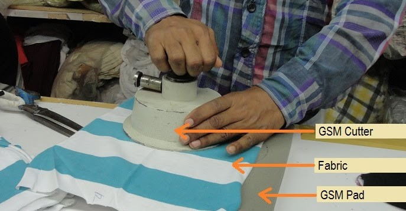
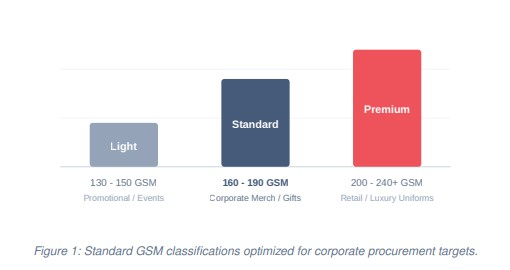

Demystifying GSM: The Corporate Buyer's Guide to T-Shirt Fabric Selection
How weight, structure, and fabric specifications impact your company's brand perception and procurement ROI.
When executing high-volume apparel procurement—whether for a nation-wide promotional campaign, an annual corporate offsite, or standardization of client-facing team uniforms—brand managers and HR professionals naturally focus heavily on graphic placement, brand colors, and turnaround timelines. However, one single technical metric dictates how that garment sits, wears, washes, and endures over time: GSM.
Selecting the wrong fabric weight doesn't just result in an uncomfortable garment; it actively degrades your brand image. A t-shirt that is uncomfortably sheer under office lighting or, conversely, a heavy knit given out during a humid mid-summer outdoor team building event will ultimately go unworn. This comprehensive guide details precisely what GSM signifies, how it impacts your corporate budget, and how to source the exact weight for your commercial requirements.
What Exactly is GSM?

GSM stands for Grams per Square Meter. It is the metric unit used globally to measure the density, weight, and thickness of a fabric canvas. To visualize this, if you were to cut a perfect 1-meter by 1-meter square out of any given knitted fabric piece, its weight in grams equals its GSM value.
Crucially, GSM measures density rather than raw quality. A 180 GSM t-shirt made of 100%
Super-Combed Cotton and a 180 GSM t-shirt made of Polycotton blend share identical weight distributions,
though their drape, breathability, and textural handfeel will differ based on yarn weave and finish styles.
A higher GSM does not automatically mean a garment is "better"—it simply means the garment is heavier and denser. The true benchmark of apparel quality relies on matching the right GSM to the structural weave (such as Combed Cotton, Cotton Matty, or Polyester Interlock) and the specific environment where the garment will be worn.

The Corporate GSM Classification Matrix
Fabric weights generally fall into three core operational brackets. Understanding these brackets allows procurement managers to match target use cases perfectly with financial allocation limits:
| Weight Class | GSM Range | Best Suited For | Key Advantages |
|---|---|---|---|
| Lightweight | 130-150 GSM | Mass giveaways, outdoor volunteer drives, marathons, single-use promotional items. | High breathability, lowest cost per unit, quick-dry nature. |
| Standard Mid-Weight | 160-190 GSM | Standard employee uniforms, corporate onboarding kits, internal brand merchandise. | Optimal compromise between durability and comfort, rich color retention. |
| Premium Heavyweight | 200-240+ GSM | Premium client gifts, technical engineer outer-wear, executive rewards, luxury fashion drops. | Highly structured fit, exceptional durability, elite perceived valuation. |
Strategic Purchasing Insider Insight: A common misconception is that "higher GSM always equals better quality." This is false. A 220 GSM poor-quality open-end cotton yarn will feel coarse, pill rapidly, and shrink excessively. Conversely, a 160 GSM premium combed compact-spun cotton can feel incredibly smooth, look polished, and easily outlast heavier alternatives. Focus on matching material yarn grade alongside your GSM target.
Why GSM Matters: Core Printing Compatibility
The chosen weight profile directly influences how the fabric substrate handles the heat, pressure, and ink layers required by customized branding processes:
• Direct-to-Film (DTF) & Screen Printing: Heavier fabrics (180+ GSM) offer the stable dimensional foundation needed to support dense ink deposits or thick polymer film transfers without puckering or dragging down the surrounding structure.
• Sublimation Printing: Typically used for sportswear or high-performance corporate activations, this requires polyester bases. These often sit in lower ranges (140-160 GSM) to maintain advanced moisture-wicking capillary actions.
• Corporate Embroidery: Never use intricate, dense brand logos or multi-colored crest emblems on fabric below 180 GSM. Heavy stitching on lightweight fabric pulls the fibers apart, leading to unsightly fabric warping around the logo border.
Procurement Checklist: Balancing Cost and Brand Perception
Before confirming your upcoming production work order, verify that your vendor documentation clarifies these structural variables alongside raw unit pricing:
1. Identify the Environmental Climate: If your team works in field operations or warehouse environments in warm geographical zones, standardizing at 170-180 GSM in an airy Matty or single-jersey structure prevents discomfort.
2. Factor in Shrinkage Buffers: All cotton knits experience slight contraction during initial laundry cycles. Standardizing slightly higher (e.g., opting for 180 GSM over 160 GSM) provides a structural buffer that maintains correct sizing over multiple washes.
3. Determine Print Area Density: Large, solid full-chest graphic prints add mechanical weight to the fabric front surface. Match large-format printing with mid-to-heavyweight panels to prevent sagging.
SUMMARY DECISION ARCHITECTURE
- Budget-Driven Activations: Settle on 140-150 GSM Combed Cotton to protect margin limits.
- Daily Office Apparel Standards: Specify 180 GSM Single Jersey or 210 GSM Cotton Matty Polo fabrics.
- Premium Executive Outerwear: Invest explicitly in 220-240 GSM Heavy Premium Loopknit configurations.